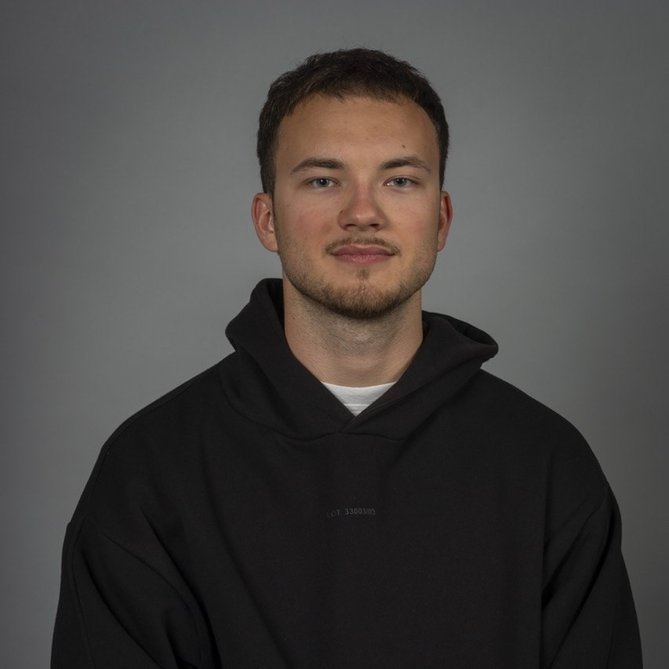
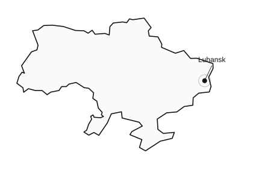
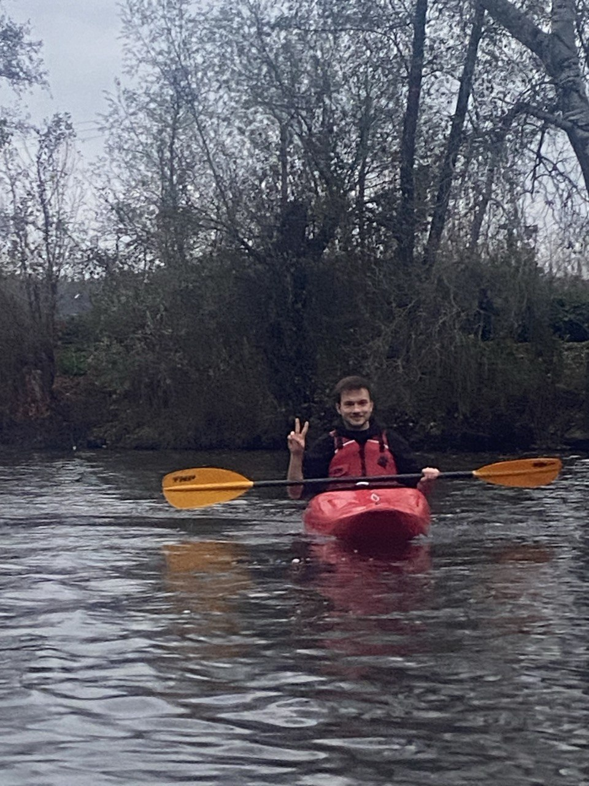
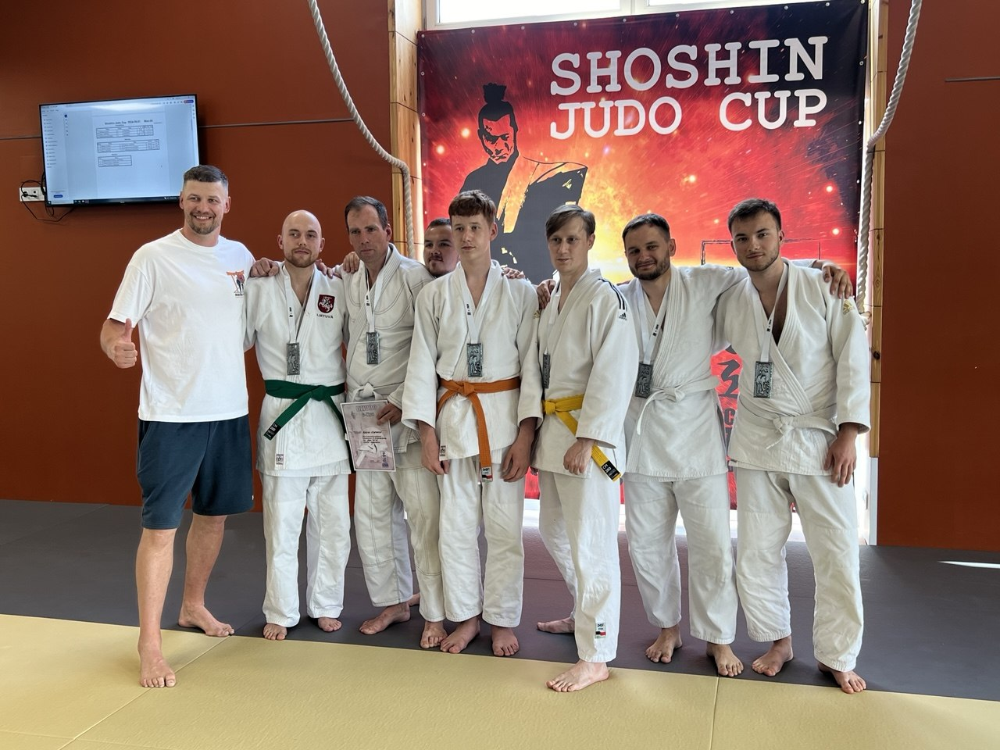
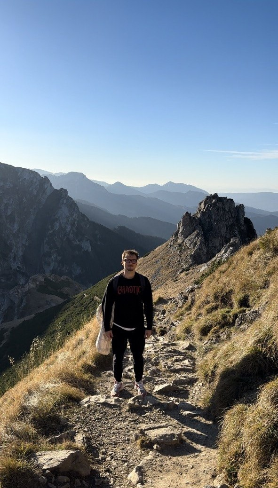

Vattenfall
Working Student Data Engineer
Data Engineer
I’m Stanislav, but you can call me Stas. I’m 23 and I’m originally from Luhansk, Ukraine. I graduated from Kaunas University of Technology and am starting a Working Student Data Engineer role at Vattenfall alongside my M.Sc. in Business Intelligence and Process Management at HWR Berlin.
GitHub / stanislav-puida

My background combines technology and business. I started with technical studies in Ukraine, continued with Business Digitalization Management in Lithuania and gained practical experience as a Data Engineer at Littelfuse.
I work with data pipelines, workflow automation and business intelligence. My experience is mainly within the Microsoft ecosystem, including Azure Data Factory, Azure Synapse, ADLS Gen2, Power BI and Power Automate, together with SQL, Python and REST APIs.
Working Student Data Engineer
Data Engineer Intern -> Data Engineer
M.Sc. Business Intelligence and Process Management
B.Sc. Business Digitalization Management
Erasmus exchange semester
Telecommunications and Radio Engineering
I began studying Telecommunications and Radio Engineering at Kharkiv National University of Radio Electronics.
My studies in Ukraine were disrupted by the war. After my time in Poland I continued my education in Lithuania.
At Kaunas University of Technology, I studied Business Digitalization Management and graduated. I was learning management, data analytics, databases and process automation.
During an Erasmus semester at Brno University of Technology, I studied business intelligence, information systems and AI. Then I returned to Lithuania.
I started working at Littelfuse alongside my studies. This experience helped me connect what I was learning at university with practical business needs.
I’m now starting an M.Sc. in Business Intelligence and Process Management at HWR Berlin and a Working Student Data Engineer role at Vattenfall. I’m continuing to work with data while building a deeper understanding of business processes and decisions.
First of all, I wanted to reunite with my family here and BIPM naturally continues my interest in the relationship between technology, people and business.
I speak Ukrainian, Russian and English and I’m learning German.
I’ve done judo and kayaking and trained at the gym. I also like travelling and hiking. I enjoy walking around Berlin and playing football, basketball and table tennis.


